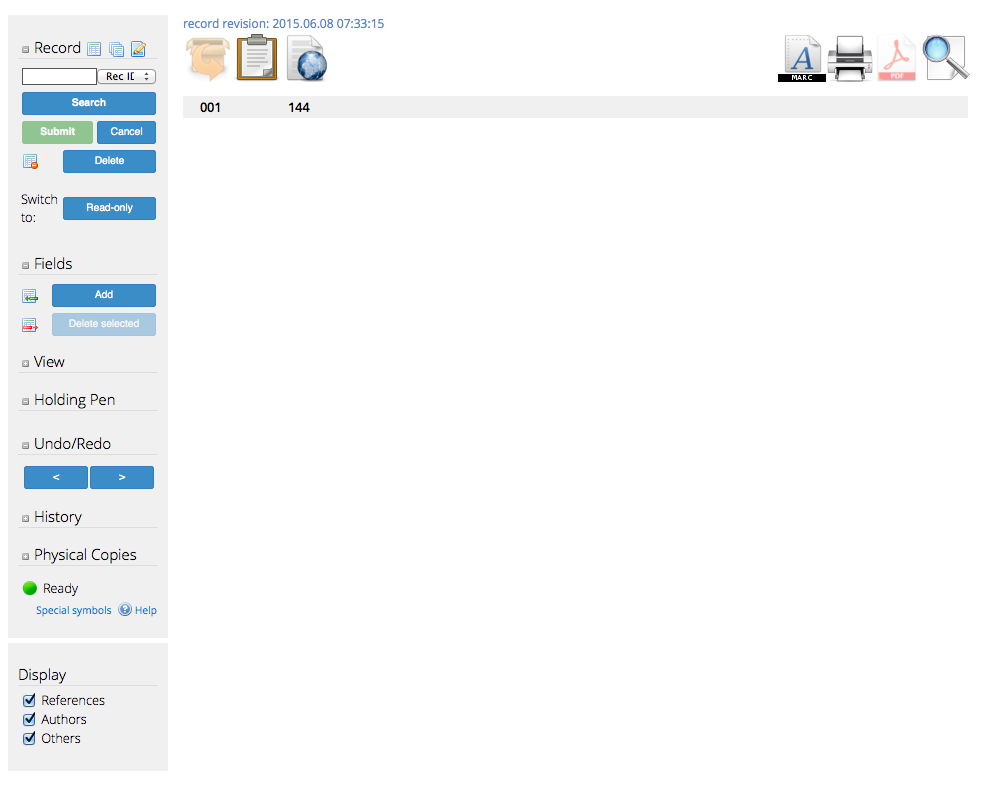
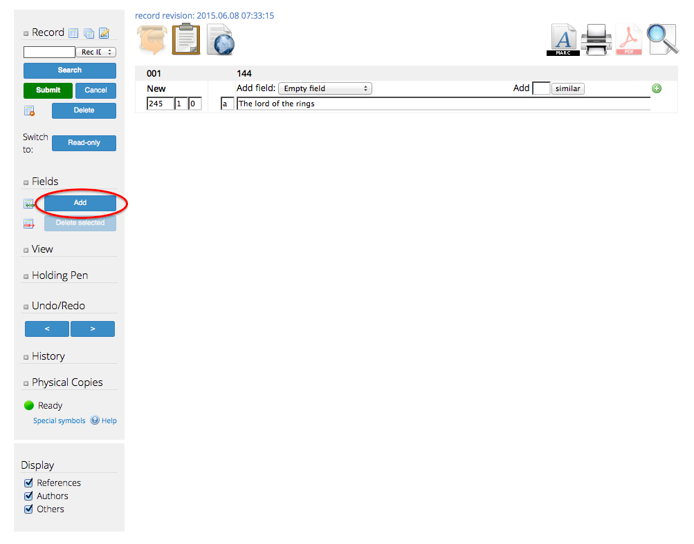
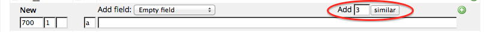
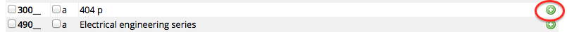
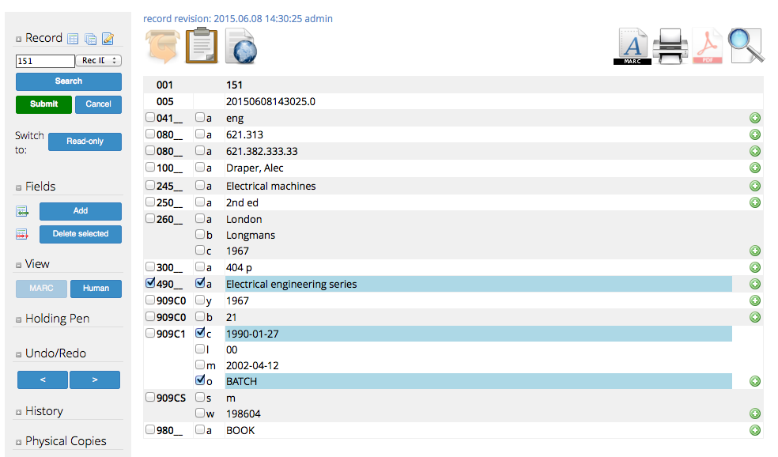
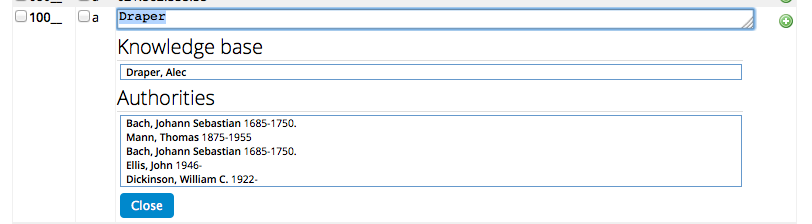
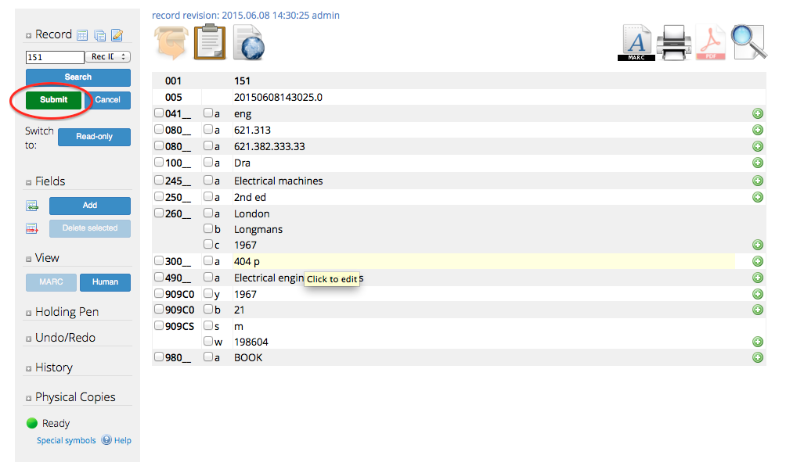
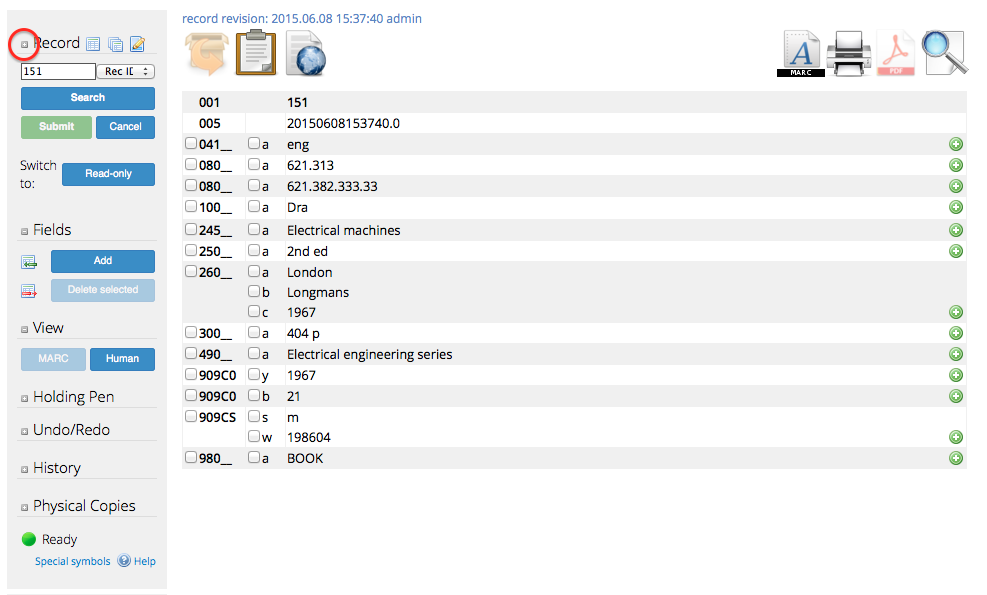
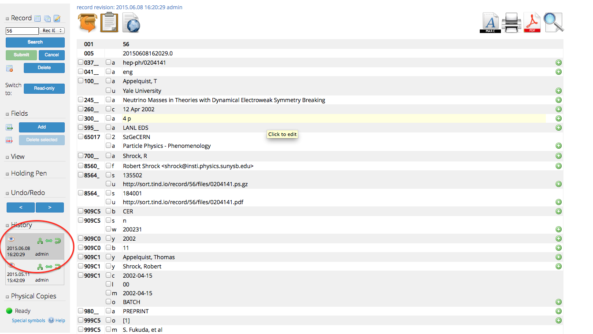

Use record editor¶
The record editor allow for creation and modification of bibliographic and authority records.
Administrators who have access will find it in the administration menu.
1. Create new record¶
Select the “New record” button on the top of the left hand menu.

Invenio has three different alternatives for creating new records:
- Empty records
- From record templates
- Import data from cross-ref

1.1 Empty records¶
Selecting empty records opens a complete empty record where only the record ID is stored.

With this option, the administrator has to build the whole record him/ herself, by adding new fields (included control fields).

See section 3 for how to adding, modifying and deleting fields and subfields.
1.2 Record templates¶
Invenio support multiple record templates and TIND provides customized templates for the different collections and standard authority record templates.
By selecting the name of a template, the template opens with a set of pre-filled fields. Shaded text are ment to be replaced while regular text is pre-filled.

1.3 Import data from cross-ref¶
Libraries having a cross-ref account can retrieve metadata by searching on a doi.
2. Clone record¶
In a similar way as the administrator can create a record from the record template, it is possible to clone a record and use it as a template.
First, open the record that you want to clone. Select the “Clone record” button next to the “New record” button.

A similar record with a new record ID is created. In this example, the old record has record ID 23 while the new has 151.

Select “Submit” to save your changes.
3. Modify record¶
A cloned record is used in the examples below.
3.1 Add new field¶
A new field is added by selecting “Add”.

Select from the list the type of field to add.

- Empty field creates an regular empty field, and allows the administrator to add the desired marc fields.
- Empty control field creates an empty control field. If your records does not have a control field from before, always start with the leader as other control field might need information from the leader to be calculated correctly.
- The other fields are pre-defined fields, which fills out the correct marc fields.
It is possible to create identical fields by typing the number of fields to create.

The “similar” button creates the number of additional fields.

3.2 Add new subfield¶
Press the green plus-icon on the right hand side of the desired marc field to create a new subfield.

Clicking multiple times creates multiple subfields.

3.3 Remove fields and subfields¶
Removing complete fields are done by clicking on the select box next to the marc field.

Removing single subfields are done by clicking on the select box next to the subfield.

3.3 Auto-suggestion of author name and subjects¶
Invenio support auto-suggestion of author name and subjects.
Start to write the name of the author or the subject. Click ctrl shift A to get suggestions.

The “Knowledge base” is dynamic and queries all records in the database and comes with suggestions of correct names.
The “Authorities” knowledge base is static and queries all authority records and displays the closest matches.
3.6 Use keyboard shortcuts¶
Multiple shortcuts are available to increase the efficiency. An overview of the shortcuts are given by selecting “Help” from the record editor.

3.5 Submit changes¶
To save the changes, press “Submit”. The administrator is requested to confirm before the changes are submitted.

Note
Only one administrator can make changes to a record at the same time. Therefore, the other administrator has to either submit or cancel before leaving the Record Editor. The record will be opened for other editors after sixty minutes.
Note
Modifications to a record has a high priority in the task queue and the changes should therefore be available during some few minutes, sometimes in some few seconds. The record should be indexed and become searchable during five minutes. However, larger tasks runs periodically and can place the task in a queue. It can therefore take up to 1-2 hours before it becomes available. Please contact support@tind.io if the record has not become available in a reasonable time.
Note
It is important that the record has a correct 980 tag to be added to the correct collection. Contact support@tind.io if you submitted a record without a 980 tag.
4. Delete record¶
The delete button is hided for additional security. The administrator need to first click on the small grey plus icon to the left of the “new record” button.

This makes the delete button visible. Press “Delete” and confirm to deleted the record.

The record will go into “read only” mode after it has been deleted. The administrator can therefore look at historical changes to the record, but never do additional changes.
5. View historical changes¶
The record editor features a revision function which allow the administrators to display, compare, and revert to previous changes.

6. Go to circulation item¶
The administrator can see how many physical copies that are linked to the bibliographic record in the tab “Physical Copies”. Select “Edit physical copies” to be sent to the circulation module for editing the circulation items.